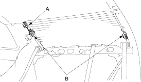
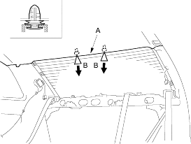

- Put on gloves to protect your hands.
- Wear eye protection when removing the glass with piano wire.
- Use seat covers to avoid damaging any surfaces.
- Do not damage the rear window defogger grid lines, window antenna grid lines and terminals.
- Remove these items:
- Trunk lid
- Rear shelf (see page 20-35)
- Disconnect the window antenna connector (A) and rear window defogger connectors (B).

- If the old rear window is to be reinstalled, make alignment marks across the glass and body with a grease pencil.
- Pull down the rear portion of the headliner (A) by detaching the clips (B). Take care not to bend the headliner excessively, or you may crease or break it.
Fastener Locations
B  : Clip, 2
: Clip, 2

- Apply protective tape along the inside and outside edges of the body. Using an awl, make a hole through the adhesive from inside the vehicle at the corner portion of the rear window. Push a piece of piano wire through the hole and wrap each end around a piece of wood.